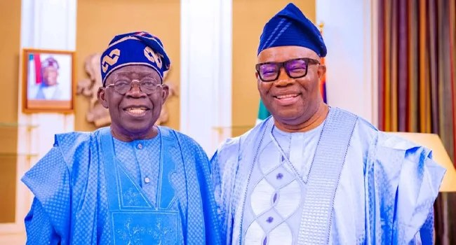

Akpabio alleges payment for social media attacks on Tinubu

Senate President Godswill Akpabio has urged young people in northern Nigeria to build grassroots support for President Bola Tinubu ahead of the 2027 election. He made the appeal on Wednesday during a visit to his office by the Arewa Revival Project, a group with members from the 19 northern states. The group presented Akpabio with an award for his contributions to nation-building.
Akpabio alleged that some people criticising Tinubu and his supporters on social media were being paid, while the young people he addressed were not. He encouraged them to convene youth groups and engage people directly, saying they should challenge what he described as propaganda and explain the case for continuity in government. The allegation was not accompanied by evidence in the account of his remarks.
He defended the administration’s economic policies, including tax reforms, and said the government was seeking to move Nigeria away from reliance on crude oil. Akpabio praised Tinubu’s handling of challenges and said he and members of the National Assembly had given the President a pass mark and endorsed him for a second term. The 2027 election is expected to include Tinubu seeking re-election, with opposition parties aiming to challenge the ruling All Progressives Congress.
Akpabio also addressed insecurity and the proposed creation of state police. He said the constitutional amendment process was nearing completion and claimed about 30 state assemblies had endorsed the proposal. He predicted a decentralised policing system could be established within a month, while expressing confidence that the country would overcome its security challenges. Earlier, Arewa Revival Project coordinator Mustafa Ibrahim said the award recognised Akpabio’s national contributions and the National Assembly’s work under his leadership.
Source: Punch